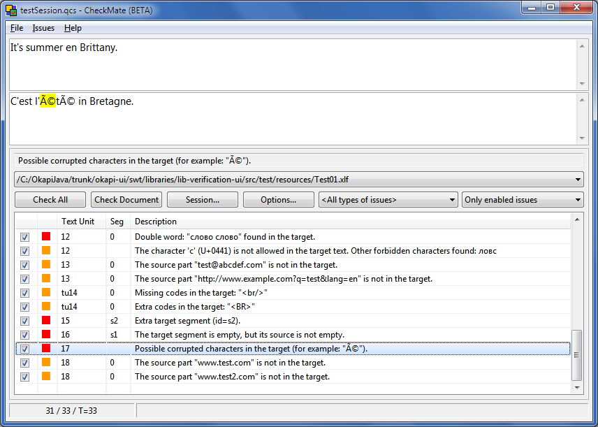

Applications
Okapi Framework
Applications

|
Applications |
Okapi FrameworkApplications |
|
|
The Okapi Framework provides a few ready-to-use applications in addition to its set of libraries and components:
 Download Rainbow | See online help | See more screenshots |
Rainbow is a cross-platform application to launch different utilities to help you
perform various localization-relate tasks. Its features include for example:
Like other Okapi applications, Rainbow uses the components called "filters" that take input files in a given native format and extract its translatable content into common resources that the Okapi tools can manipulate and modify. There are filters for amny formats, for example: OpenOffice, XML, HTML, Properties, DTD, MS Office, tables, etc. Many translation-related formats are also supported: XLIFF, PO, TS, TMX, TTX, etc. Rainbow also uses the Okpai components called "connectors": They allow you to access different type of local or remote translation resources. For example: Google-MT, Microsoft-MT, OpenTran, MyMemory, Translate Toolkit TM, Apertium, TDA-Search, and more. Note that, in addition to third-party TM access, Rainbow can also use Okapi's own TM egine: the Pensieve TM. Another feature of Rainbow is to allow the user to build "pipelines" of tasks using simple components called "steps" that perform well-defined limited actions. You can chain those steps to execute many tasks in a single process. |
|
 Download CheckMate | See online help | See more screenshots |
CheckMate is a cross-platform application that allows you to perfom various
quality checks on bilingual translated documents. Some of the verifications performed are:
You can disabled warnings that happen to be incorrect, so the next time you re-run the verification those warnings remain disabled. You can also save your session and come back to it later. In addition to the interactive list of warnings, the tool can generate complete reports of the issues found. CheckMate allows you to integrate directly the verifications done by the open-source LanguageTool checker, which offers a wide range of simple and complex checks for many languages. You can work with any bilingual or multilingual file format supported by the Okapi filters, for example: XLIFF, TMX, PO, TS, TTX, etc. |
 Download Ratel | See online help | See more screenshots |
Ratel is a cross-platform application to create and maintain segmentation rules.
The tool works with the SRX (Segmentation Rules eXchange) format. Its features includes for example:
Segmentations rules are used in several of Okapi's components to break text units into small parts such as sentences. Using SRX rules allows to be more interoperable with other sets of tools. For example, when sharing a translation memory, SRX allows two different tools to also exchange the rules used to break down the paragraphs into the sentences that are in the TM. |
 Download Tikal | See online help | See more screenshots |
Tikal is a cross-platform command-line tool that performs some simple
localization-related tasks. For example:
Like other Okapi applications, Tikal uses the components provided by the Okapi libraries, for example the connectors to differents translation resource engines such as Apertium, OpenTran, Googl-MT, Microsoft-MT, MyMemory, etc. It also uses the Okapi filters, allowing you to process files in many different formats: HTML, ODT, DOCX, PO, XLIFF, TMX, XML, and many more. |